Clock
Replaces Rainmeter
Draws your skin natively and matches Rainmeter to within a pixel. Size, opacity, colour, 12 or 24 hour, drag to move.
9.8 MB
clock alone, vs 22 MB
Windows 11 · Free · Open source
Lumen is a native clock, launcher, clear taskbar, island and notification stack. It replaces Rainmeter, PowerToys Run and TranslucentTB in up to 40 MB of RAM.
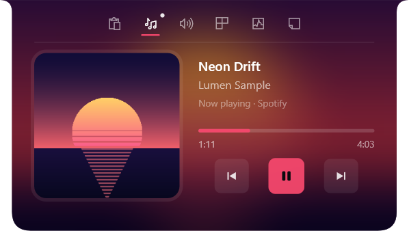
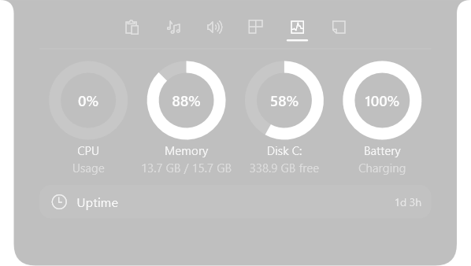
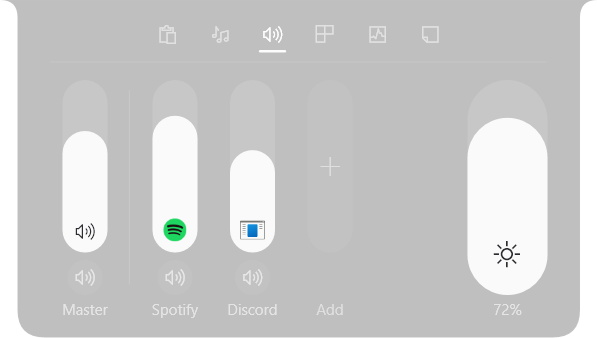
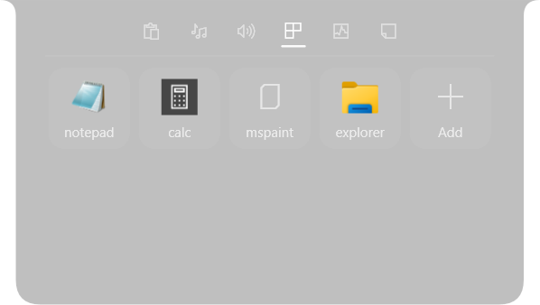
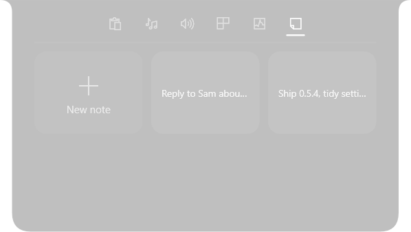
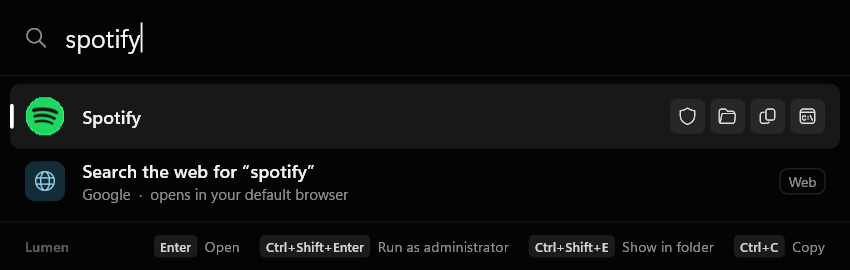
Screenshots of the running app.
The launcher opens over whatever you are doing.
Apps, windows, folders and the web in one list.
Maths, units and time answer as you type.
Spotify and any other player, tinted by the album cover.
CPU, memory, disk and battery at a glance.
Per-app volume and brightness sliders.
Pinned apps, one click away.
Sticky notes that stay out of the way.
Modules
Replaces Rainmeter
Draws your skin natively and matches Rainmeter to within a pixel. Size, opacity, colour, 12 or 24 hour, drag to move.
9.8 MB
clock alone, vs 22 MB
Replaces PowerToys Run
Apps, files, folders, calculator, units, windows, shell, system commands and web. New apps appear without a restart.
13 plugins
Alt + Space
Replaces TranslucentTB
Transparent, tinted or blurred per situation: desktop, maximised window, Start, Task View. Includes a restore button and a fail-safe.
4 states
auto-disables on fault
Replaces Windows banners
A macOS-style notification stack with real backdrop blur, app and avatar pictures, and your native sounds kept. The Windows banner is hidden.
Stacked
blur, avatars, sounds
Island
A media player, system stats, per-app volume, launch shortcuts and sticky notes. Every feature has its own toggle.
The island takes its colour from the album cover, with a soft blurred backdrop. One toggle turns it off.
Spotify, YouTube Music in a browser, VLC and more. If a player publishes no cover, Lumen looks it up online from the artist and title only.
Play, pause, skip and seek from the island. Volume and brightness live on the Sound tab.
Settings
A Windows 11 style settings window. Turn a module off and it unloads, freeing its memory.
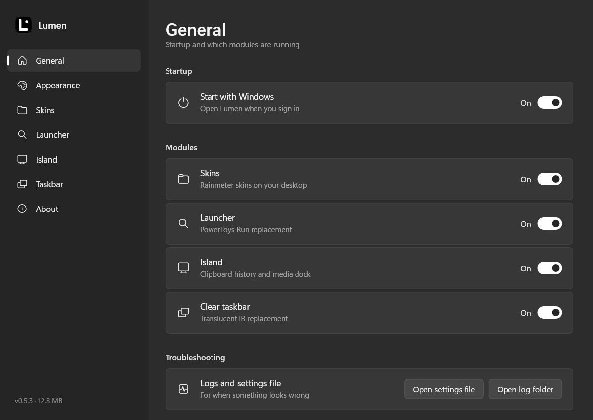
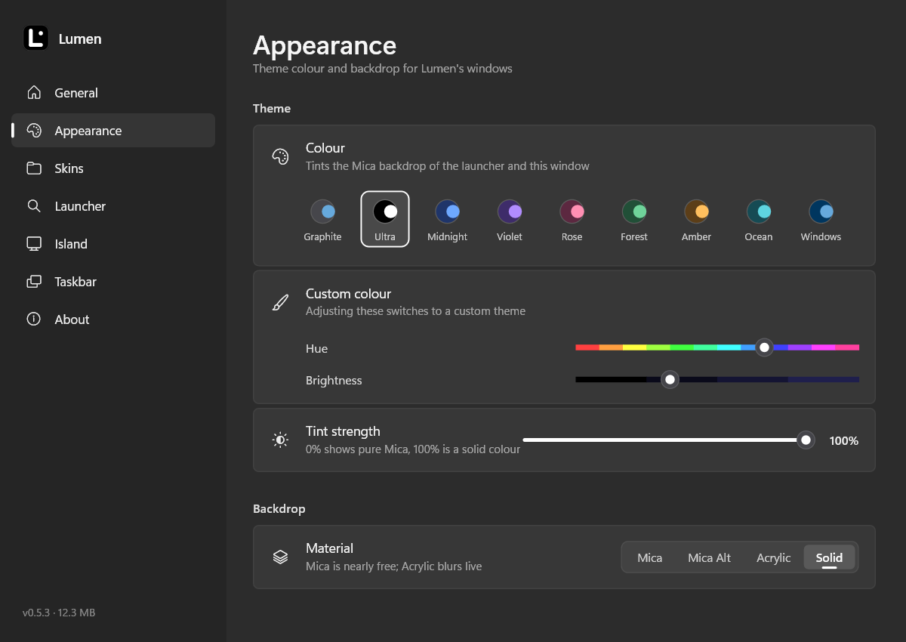
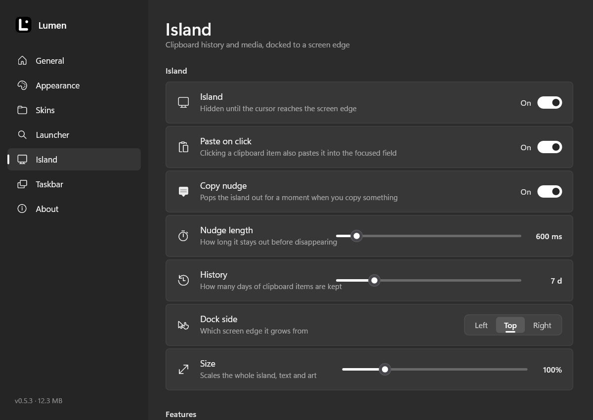
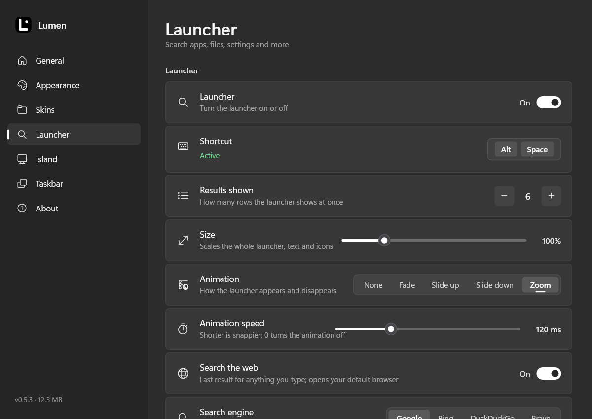
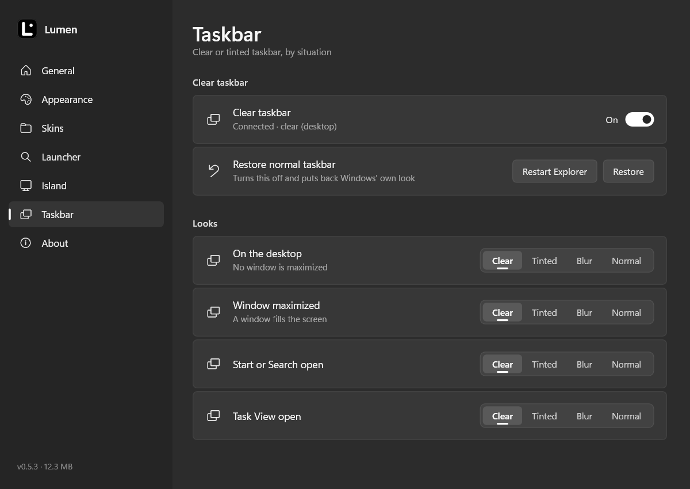
Performance
Install
From the latest GitHub release. Installs for your account only.
The files aren’t code-signed yet. If SmartScreen warns, choose More info, then Run anyway.
Open settings from the tray icon. Uninstall any time from Apps and features.